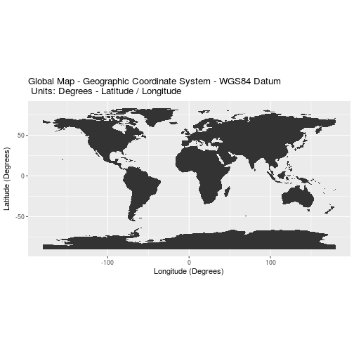
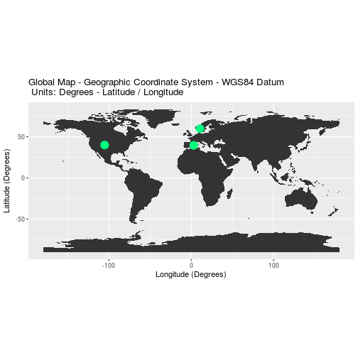
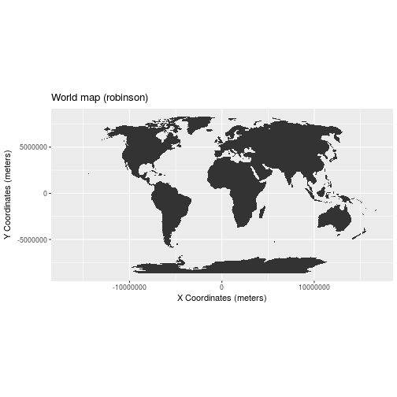
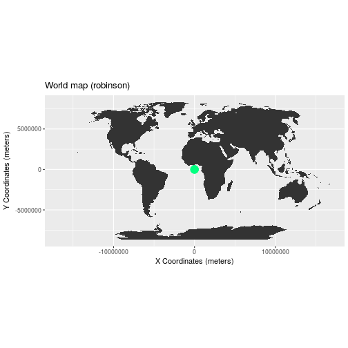
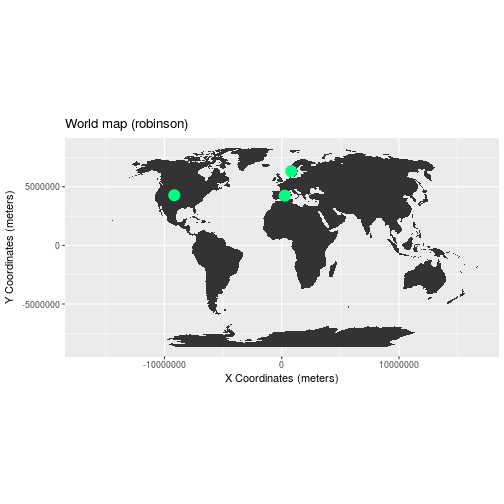

Intro to Coordinate Reference Systems & Spatial Projections
Overview
Teaching: 30 min
Exercises: 30 minQuestions
TBD
Objectives
TBD
About
This lesson covers the key spatial attributes that are needed to work with spatial data including: Coordinate Reference Systems (CRS), Extent and spatial resolution.
R Skill Level: Beginner - you’ve got the basics of R down.
Goals / Objectives
After completing this activity, you will:
- appreciate the basic concept of what a Coordinate Reference System (
CRS) is and how it impacts data processing, analysis and visualization. - Understand the basic differences between a geographic and a projected
CRS. - Become familiar with the Universal Trans Mercator (UTM) and Geographic (WGS84) CRSs
Things You’ll Need To Complete This Lesson
To complete this lesson you will need the most current version of R, and
preferably, RStudio loaded on your computer.
Install R Packages
- NAME:
install.packages("NAME")
More on Packages in R - Adapted from Software Carpentry.
Download Data
If you want to follow along, please download
Download “land” - Natural Earth Global Continent Boundary Layer
Download all Graticules - Natural Earth Global Graticules Layer
Spatial-Temporal Data & Data Management Lesson Series: This lesson is part
of a lesson series introducing
spatial data and data management in R .
It is also part of a larger
spatio-temporal Data Carpentry Workshop
that includes working with
raster data in R,
vector data in R
and
tabular time series in R.
Additional Resources
- Read more on coordinate systems in the QGIS documentation.
- NEON Data Skills Lesson The Relationship Between Raster Resolution, Spatial extent & Number of Pixels - in R
Getting Started with CRS
Check out this short video highlighting how map projections can make continents look proportionally larger or smaller than they actually are!
- For more on types of projections, visit ESRI’s ArcGIS reference on projection types..
- Read more about choosing a projection/datum.
What is a Coordinate Reference System
To define the location of something we often use a coordinate system. This system consists of an X and a Y value, located within a 2 (or more) -dimensional space.

While the above coordinate system is 2-dimensional, we live on a 3-dimensional earth that happens to be “round”. To define the location of objects on the earth, which is round, we need a coordinate system that adapts to the Earth’s shape. When we make maps on paper or on a flat computer screen, we move from a 3-Dimensional space (the globe) to a 2-Dimensional space (our computer screens or a piece of paper). The components of the CRS define how the “flattening” of data that exists in a 3-D globe space. The CRS also defines the the coordinate system itself.

A coordinate reference system (CRS) is a coordinate-based local, regional or global system used to locate geographical entities. – Wikipedia
The Components of a CRS
The coordinate reference system is made up of several key components:
- Coordinate System: the X, Y grid upon which our data is overlayed and how we define where a point is located in space.
- Horizontal and vertical units: The units used to define the grid along the x, y (and z) axis.
- Datum: A modeled version of the shape of the earth which defines the origin used to place the coordinate system in space. We will explain this further, below.
- Projection Information: the mathematical equation used to flatten objects that are on a round surface (e.g. the earth) so we can view them on a flat surface (e.g. our computer screens or a paper map).
Why CRS is Important
It is important to understand the coordinate system that your data uses - particularly if you are working with different data stored in different coordinate systems. If you have data from the same location that are stored in different coordinate reference systems, they will not line up in any GIS or other program unless you have a program like ArcGIS or QGIS that supports projection on the fly. Even if you work in a tool that supports projection on the fly, you will want to all of your data in the same projection for performing analysis and processing tasks.
Data Tip: Spatialreference.org provides an excellent online library of CRS information.
Coordinate System & Units
We can define a spatial location, such as a plot location, using an x- and a y-value - similar to our cartesian coordinate system displayed in the figure, above.
For example, the map below, generated in R with ggplot2 shows all of the
continents in the world, in a Geographic Coordinate Reference System. The
units are Degrees and the coordinate system itself is latitude and
longitude with the origin being the location where the equator meets
the central meridian on the globe (0,0).
library(rgdal)
library(ggplot2)
library(rgeos)
rgeos version: 0.3-26, (SVN revision 560)
GEOS runtime version: 3.4.2-CAPI-1.8.2 r3921
Linking to sp version: 1.2-7
Polygon checking: TRUE
library(raster)
# read shapefile
worldBound <- readOGR(dsn="data/Global/Boundaries/ne_110m_land",
layer="ne_110m_land")
OGR data source with driver: ESRI Shapefile
Source: "/home/travis/build/datacarpentry/r-spatial-data-management-intro/_episodes_rmd/data/Global/Boundaries/ne_110m_land", layer: "ne_110m_land"
with 127 features
It has 3 fields
# convert to dataframe
worldBound_df <- fortify(worldBound)
Regions defined for each Polygons
# plot map
worldMap <- ggplot(worldBound_df, aes(long,lat, group=group)) +
geom_polygon() +
xlab("Longitude (Degrees)") + ylab("Latitude (Degrees)") +
coord_equal() +
ggtitle("Global Map - Geographic Coordinate System - WGS84 Datum\n Units: Degrees - Latitude / Longitude")
worldMap

We can add three coordinate locations to our map. Note that the UNITS are in decimal degrees (latitude, longitude):
- Boulder, Colorado: 40.0274, -105.2519
- Oslo, Norway: 59.9500, 10.7500
- Mallorca, Spain: 39.6167, 2.9833
Let’s create a second map with the locations overlayed on top of the continental boundary layer.
# define locations of Boulder, CO and Oslo, Norway
# store them in a data.frame format
loc.df <- data.frame(lon=c(-105.2519, 10.7500, 2.9833),
lat=c(40.0274, 59.9500, 39.6167))
# only needed if the above is a spatial points object
# loc.df <- fortify(loc)
# add a point to the map
mapLocations <- worldMap + geom_point(data=loc.df,
aes(x=lon, y=lat, group=NULL),
colour = "springgreen",
size=5)
mapLocations + theme(legend.position="none")

Geographic CRS - The Good & The Less Good
Geographic coordinate systems in decimal degrees are helpful when we need to
locate places on the Earth. However, latitude and longitude
locations are not located using uniform measurement units. Thus, geographic
CRSs are not ideal for measuring distance. This is why other projected CRS
have been developed.

Projected CRS - Robinson
We can view the same data above, in another CRS - Robinson. Robinson is a
projected CRS. Notice that the country boundaries on the map - have a
different shape compared to the map that we created above in the CRS:
Geographic lat/long WGS84.
# reproject from longlat to robinson
worldBound_robin <- spTransform(worldBound,
CRS("+proj=robin"))
worldBound_df_robin <- fortify(worldBound_robin)
Regions defined for each Polygons
# force R to plot x and y values without abbrev
options(scipen=100)
robMap <- ggplot(worldBound_df_robin, aes(long,lat, group=group)) +
geom_polygon() +
labs(title="World map (robinson)") +
xlab("X Coordinates (meters)") + ylab("Y Coordinates (meters)") +
coord_equal()
robMap

Now what happens if you try to add the same Lat / Long coordinate locations that
we used above, to our map, with the CRS of Robinsons?
# add a point to the map
newMap <- robMap + geom_point(data=loc.df,
aes(x=lon, y=lat, group=NULL),
colour = "springgreen",
size=5)
newMap + theme(legend.position="none")

Notice above that when we try to add lat/long coordinates in degrees, to a map
in a different CRS, that the points are not in the correct location. We need
to first convert the points to the new projection - a process often referred
to as reprojection but performed by the spTransform() function in R.
# define locations of Boulder, CO and Oslo, Norway
loc.df
lon lat
1 -105.2519 40.0274
2 10.7500 59.9500
3 2.9833 39.6167
# convert to spatial Points data frame
loc.spdf <- SpatialPointsDataFrame(coords = loc.df, data=loc.df,
proj4string=crs(worldBound))
loc.spdf
class : SpatialPointsDataFrame
features : 3
extent : -105.2519, 10.75, 39.6167, 59.95 (xmin, xmax, ymin, ymax)
coord. ref. : +proj=longlat +datum=WGS84 +no_defs +ellps=WGS84 +towgs84=0,0,0
variables : 2
names : lon, lat
min values : -105.2519, 39.6167
max values : 10.75, 59.95
# reproject data to Robinson
loc.spdf.rob <- spTransform(loc.spdf, CRSobj = CRS("+proj=robin"))
loc.rob.df <- as.data.frame(cbind(loc.spdf.rob$lon, loc.spdf.rob$lat))
# rename each column
names(loc.rob.df ) <- c("X","Y")
# convert spatial object to a data.frame for ggplot
loc.rob <- fortify(loc.rob.df)
# notice the coordinate system in the Robinson projection (CRS) is DIFFERENT
# from the coordinate values for the same locations in a geographic CRS.
loc.rob
X Y
1 -9162993.5 4279262
2 811462.5 6331141
3 260256.6 4244127
# add a point to the map
newMap <- robMap + geom_point(data=loc.rob,
aes(x=X, y=Y, group=NULL),
colour = "springgreen",
size=5)
newMap + theme(legend.position="none")

Compare Maps
Both of the plots above look visually different and also use a different coordinate system. Let’s look at both, side by side, with the actual graticules or latitude and longitude lines rendered on the map.
NOTE: The code for this map can be found in the .R document that is available for download at the bottom of this page!
Error in theme(line = element_blank(), line = element_blank(), axis.text.x = element_blank(), : formal argument "line" matched by multiple actual arguments
OGR data source with driver: ESRI Shapefile
Source: "/home/travis/build/datacarpentry/r-spatial-data-management-intro/_episodes_rmd/data/Global/Boundaries/ne_110m_graticules_all", layer: "ne_110m_graticules_15"
with 35 features
It has 5 fields
OGR data source with driver: ESRI Shapefile
Source: "/home/travis/build/datacarpentry/r-spatial-data-management-intro/_episodes_rmd/data/Global/Boundaries/ne_110m_graticules_all", layer: "ne_110m_wgs84_bounding_box"
with 1 features
It has 2 fields
Error in eval(expr, envir, enclos): object 'newTheme' not found
Error in eval(expr, envir, enclos): object 'latLongMap' not found
Error in eval(expr, envir, enclos): object 'newTheme' not found
Error in eval(expr, envir, enclos): object 'finalRobMap' not found
Error in arrangeGrob(...): object 'latLongMap' not found
Why Multiple CRS?
You may be wondering, why bother with different CRSs if it makes our
analysis more complicated? Well, each CRS is optimized to best represent:
- Shape and/or
- Scale / distance and/or
- Area
of features in the data. And no one CRS is great at optimizing shape, distance AND
area. Some CRSs are optimized for shape, some distance, some area. Some
CRSs are also optimized for particular regions -
for instance the United States, or Europe. Discussing CRS as it optimizes shape,
distance and area is beyond the scope of this tutorial, but it’s important to
understand that the CRS that you chose for your data, will impact working with
the data!
Challenge
Compare the maps of the globe above. What do you notice about the shape of the various countries. Are there any signs of distortion in certain areas on either map? Which one is better?
Look at the image below - which depicts maps of the United States in 4 different
CRSs. What visual differences do you notice in each map? Look up each projection online, what elements (shape,area or distance) does each projection used in the graphic below optimize?

Geographic vs Projected CRS
The above maps provide examples of the two main types of coordinate systems:
- Geographic coordinate systems: coordinate systems that span the entire globe (e.g. latitude / longitude).
- Projected coordinate Systems: coordinate systems that are localized to minimize visual distortion in a particular region (e.g. Robinson, UTM, State Plane)
In the next tutorial, we will discuss the differences between these CRSs in
more detail. Feel
free to skip over this section and come back to it with fresh eyes if the
concept of a CRS is becoming too complex. It’s easisest to take on in
bite sized pieces!
Key Points
TBD